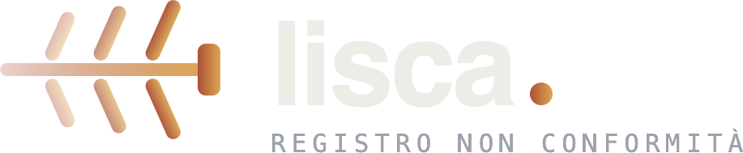

Most business software is too big to solve anything.
Suites promise to cover everything and end up owning nothing. Meanwhile the actual bottleneck — the quote that takes two hours, the non-conformity tracked on paper, the prospect list nobody maintains — stays exactly where it was.
The usual path
- A platform that covers 100% of processes at 40% of the depth each one needs.
- Six to eighteen months before anyone touches it in production.
- Licence costs disconnected from the value of the one workflow you cared about.
- Configuration so heavy that the team quietly goes back to spreadsheets.
- The knowledge stays in people's heads; the software only records the outcome.
How we work
- One product, one job, done to the end — including the awkward edge cases.
- In production in weeks, refined with real data from the first month.
- Subscription priced against the workflow it replaces, with no annual lock-in.
- Adopted because it is faster than the old way, not because it is mandated.
- The method is encoded in the product; the decision stays with the operator.
Two products, in daily production use.
Each one owns a single operational problem end-to-end. They are the proof of the model: narrow scope, real depth, live with paying customers.
RapidMech CNC quoting
Turns a technical drawing into a structured CNC quote in under a minute — and turns every closed quote into shop-floor memory.
- Geometry, dimensions and material extracted from the drawing, even from an old PDF
- Cost broken down by phase: setup, machining, quality control, margin
- Morphological archive: finds the most similar past parts in seconds
- Margin analysis by part family — the data the ERP never sees

Lisca Quality / ISO 9001
A cloud non-conformity register for ISO 9001 teams, with root-cause analysis built into the workflow instead of bolted onto it.
- Guided root-cause analysis: Fishbone and 5-Why, step by step
- Corrective actions with owners and automatic deadlines
- Audit-ready exports — the register an auditor expects to see
- Shared across departments, with a full history per non-conformity
Where software needs a person in the loop.
Some work should not run on autopilot. Our services pair our own tooling with people who supervise every step — the automation does the volume, a human decides what goes out and what happens next.
Managed LinkedIn lead generation. Orbitale finds the right prospects, opens the conversation with invitations and messages, and brings the warm ones to you — while you stay in control of who is contacted and you close the deals yourself.
It is not a tool you subscribe to and configure: it is a service we run for you, on your own profile, with a team reviewing the work.
Visit Orbitale →We accelerate industries.
Beyond our own products, we build vertical micro-SaaS for organizations that want one specific workflow to run faster. Same method, same standard — applied to your process instead of ours.
01 One workflow, productized
We take the process that slows the business down — quoting, intake, qualification, reporting, compliance — and turn it into a focused product the team actually opens every morning.
02 Weeks, not quarters
Micro-SaaS logic means a small surface built with current technology: a working version in weeks, iterated in days against real cases, priced as a subscription rather than a capital project.
03 Your brand, our engine
Solutions can ship white-label: your name, your colors and your domain in front — hosting, updates, security and support handled by Effecte behind the scenes.
04 Built on what already works
Extraction from documents, structured scoring, guided methodology, morphological search: components proven in our own products, recombined for your vertical instead of written from zero.
05 Operated, not delivered and forgotten
We run what we build. Monitoring, backups, updates and the small fixes nobody budgets for are part of the subscription, not a separate maintenance negotiation.
06 Your data stays yours
Strict separation per client, export on demand, no reuse of your content to train models. Designed to survive a client audit, including the ones with a legal department attached.
From a bottleneck to a product in production.
The same four steps every time. Short, sequential, and designed so you can stop after any of them.
Frame the problem
A working session on the actual process: who does what, where the hours go, which decisions are repeated. We come back with the scope of a product — and an honest answer on whether it is worth building at all.
Prototype on real cases
A working version handling your own documents and data, not a slide deck. Enough to judge the result on cases your team already knows the answer to.
Ship to the team
Accounts, roles, your branding, your parameters. Rollout to the first users with onboarding measured in minutes: if it needs a training course, the design is wrong.
Operate and refine
We host, monitor and update it. What real usage reveals in the first months goes back into the product — the phase where most software is abandoned is the one we treat as the actual work.
Three ways to work with us.
All three are subscriptions. None of them requires an annual commitment to start.
Use our products
Subscribe to RapidMech or Lisca as they are. Configured on your machines, materials and processes, in production the same week.
Vertical solution
A micro-SaaS built for your workflow, designed, shipped and operated by Effecte. You get the product; we keep it running.
White-label platform
The solution ships under your brand, on your domain, for your clients or your network — with our engine and our operations behind it.
Six rules we do not bend.
They are the reason our products stay small, and the reason they get used.
01 One problem per product
No platforms, no suites. Each product does one operational job completely, which is what makes it deployable in days.
02 Method encoded, not enforced
Costing logic, Ishikawa, scoring rules: the method lives in the workflow, while the final decision stays with the person doing the job.
03 Nothing hidden
Every value the software produces can be inspected and overridden. Numbers nobody can explain do not survive contact with a customer.
04 Knowledge accumulates
Each closed job leaves something behind — an archive, a history, a pattern — so the organization gets better instead of just faster.
05 Confidentiality by default
Client content is never used to train models and never shared with third parties. Built to operate under NDA, because that is the normal case.
06 We run what we ship
Hosting, monitoring and updates are ours. Software that is only delivered, never operated, degrades the day the project ends.
What people ask before starting.
The recurring ones, answered directly.
What exactly is a micro-SaaS?
A software product with a deliberately narrow scope: one workflow, covered end-to-end, delivered as a subscription. The opposite of a suite. It is small enough to build in weeks and to be understood by a new user in minutes, and deep enough to actually replace the way the work is done today.
Are you a software house or a product company?
A product company that also builds verticals. We operate our own products — RapidMech and Lisca — and a human-supervised service, Orbitale; we reuse what we learned there when we build for a client. What we deliver is a product with a subscription and an operator behind it, not a codebase handed over at the end of a project.
How long before something is in production?
A working prototype on your real cases in two to four weeks; a version in the team's hands within weeks after that. If a scope cannot reach production in that range, we split it or we say it is not a fit.
How is it priced?
As a monthly subscription, sized against the workflow it replaces. Vertical solutions carry a build phase priced separately and then move to the same model. No annual lock-in to start.
Can it ship under our own brand?
Yes. White-label deployment — your name, colors and domain — is a standard option, including for client-facing platforms. The engine, hosting and support stay with us.
What happens to our data?
It stays separated per client and exportable on demand. Client content is never used to train models and never shared with third parties. We design for environments where an NDA is the baseline, not the exception.
Do you replace our ERP or management system?
No. We cover the workflow the ERP handles badly or not at all, and integrate with it where it makes sense. Replacing a working management system is rarely the cheapest way to fix a bottleneck.
Do you work outside Switzerland and Italy?
Yes. Our products are cloud-based and our work is remote by default, with on-site sessions where the process requires seeing it in person. We work in English and Italian.
Have a workflow worth accelerating?
Tell us the process that slows you down and what it costs you today. We will come back with what the product would look like, what it would take to build it, and an honest answer if the answer is that you do not need one.
Write to info@effectesa.comCorso San Gottardo 46E
6830 Chiasso
Switzerland